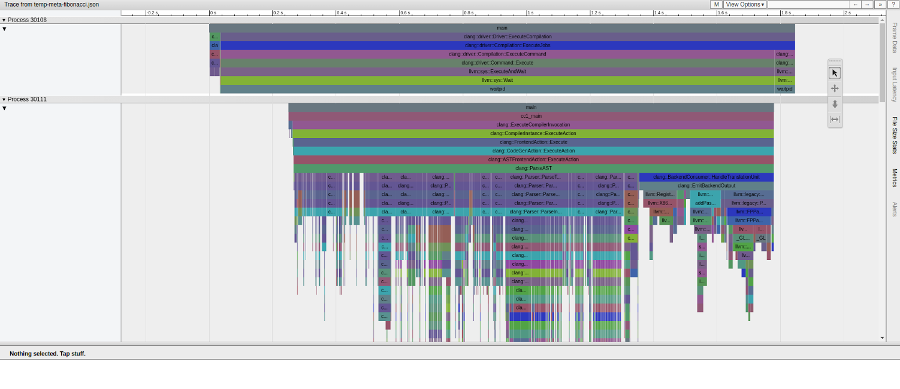

uftrace 使用指南
uftrace 是 Linux 上相當實用的函式追蹤工具，適合用來觀察程式的呼叫路徑、執行時間、函式參數與回傳值。對 C、C++ 這類需要做函式級分析的情境特別好用。
官方資源：
1. 安裝
Ubuntu / Debian
sudo apt update
sudo apt install uftrace
CentOS / RHEL
sudo yum install uftrace
# 較新的發行版可改用 dnf
sudo dnf install uftrace
從原始碼編譯
git clone https://github.com/namhyung/uftrace.git
cd uftrace
make
sudo make install
2. 使用前準備
uftrace 通常需要搭配編譯期插樁資訊，常見作法如下：
gcc -pg -o program source.c
# 或者
gcc -finstrument-functions -o program source.c
若你要分析的程式比較複雜，建議保留除錯資訊，後續輸出會比較好讀：
gcc -g -pg -o program source.c
3. 基本工作流程
3.1 記錄執行軌跡
# 基本用法
uftrace record ./your_program
# 指定輸出目錄
uftrace record -d trace_data ./your_program
# 記錄函式參數
uftrace record -A main ./your_program
3.2 重播追蹤結果
# 直接重播
uftrace replay
# 從指定目錄讀取
uftrace replay -d trace_data
# 顯示函式參數與回傳值
uftrace replay -A main -R main
3.3 產生報表與呼叫圖
# 函式統計報表
uftrace report
# 依呼叫次數與總耗時排序
uftrace report -s call,total
# 顯示呼叫關係
uftrace graph
4. 常用選項
4.1 record 常見參數
# 限制追蹤深度
uftrace record -D 5 ./program
# 只追蹤特定函式
uftrace record -F main,func1,func2 ./program
# 排除雜訊函式
uftrace record -N printf,malloc,free ./program
# 只記錄耗時超過 1ms 的函式
uftrace record -t 1ms ./program
# 記錄核心函式
sudo uftrace record -k ./program
# 記錄回傳值
uftrace record -R func_name ./program
4.2 replay 常見參數
# 顯示時間戳
uftrace replay -t
# 顯示耗時
uftrace replay -T
# 僅顯示指定函式
uftrace replay -F main,important_func
# 顯示參數與回傳值
uftrace replay -A main -R main
5. 實作範例
5.1 範例程式
#include <stdio.h>
#include <unistd.h>
void func_c(void) {
printf("In function C\n");
usleep(1000);
}
void func_b(void) {
printf("In function B\n");
usleep(2000);
func_c();
}
void func_a(void) {
printf("In function A\n");
usleep(3000);
func_b();
}
int main(void) {
printf("Starting program\n");
func_a();
printf("Program finished\n");
return 0;
}
5.2 編譯與追蹤
gcc -g -pg -o test test.c
uftrace record ./test
uftrace replay
5.3 輸出範例
uftrace replay 實際輸出：
# DURATION TID FUNCTION
0.221 us [3407146] | __monstartup();
0.061 us [3407146] | __cxa_atexit();
[3407146] | main() {
4.018 us [3407146] | puts();
[3407146] | func_a() {
0.080 us [3407146] | puts();
3.064 ms [3407146] | usleep();
[3407146] | func_b() {
0.360 us [3407146] | puts();
2.062 ms [3407146] | usleep();
[3407146] | func_c() {
0.381 us [3407146] | puts();
1.056 ms [3407146] | usleep();
1.057 ms [3407146] | } /* func_c */
3.121 ms [3407146] | } /* func_b */
6.185 ms [3407146] | } /* func_a */
0.140 us [3407146] | puts();
6.190 ms [3407146] | } /* main */
uftrace report 實際輸出：
Total time Self time Calls Function
========== ========== ========== ====================
6.190 ms 0.361 us 1 main
6.185 ms 0.320 us 1 func_a
6.183 ms 6.183 ms 3 usleep
3.121 ms 0.563 us 1 func_b
1.057 ms 0.330 us 1 func_c
4.979 us 4.979 us 5 puts
0.221 us 0.221 us 1 __monstartup
0.061 us 0.061 us 1 __cxa_atexit
uftrace graph 實際輸出：
# Function Call Graph for 'uftrace_test' (session: b7df94d7ada96d79)
========== FUNCTION CALL GRAPH ==========
# TOTAL TIME FUNCTION
6.190 ms : (1) uftrace_test
0.221 us : +-(1) __monstartup
: |
0.061 us : +-(1) __cxa_atexit
: |
6.190 ms : +-(1) main
4.158 us : +-(2) puts
: |
6.185 ms : +-(1) func_a
0.080 us : +-(1) puts
: |
3.064 ms : +-(1) usleep
: |
3.121 ms : +-(1) func_b
0.360 us : +-(1) puts
: |
2.062 ms : +-(1) usleep
: |
1.057 ms : +-(1) func_c
0.381 us : +-(1) puts
: |
1.056 ms : +-(1) usleep
注意：
printf會被 glibc 最佳化為puts（不含格式字串時），所以輸出中看到的是puts而非printf。__monstartup和__cxa_atexit是 gprof 插樁的初始化函式，正常出現。
6. 進階功能
6.1 使用腳本自訂分析
uftrace script -S analyze.py
def uftrace_entry(ctx):
print(f"進入: {ctx['name']}，時間戳: {ctx['timestamp']}")
def uftrace_exit(ctx):
print(f"離開: {ctx['name']}，耗時: {ctx['duration']}")
6.2 匯出 Chrome Trace
uftrace dump --chrome > trace.json
之後可在 Chromium / Chrome 的追蹤檢視工具中載入 trace.json 進行視覺化分析。

6.3 匯出 Graphviz 呼叫圖
uftrace graph --graphviz | dot -Tpng -o callgraph.png
6.4 產生 Flame Graph 資料
uftrace dump --flame-graph > flamegraph.txt
./flamegraph.pl flamegraph.txt > flamegraph.svg
7. 除錯與調整技巧
7.1 過濾雜訊函式
uftrace record -N "malloc,free,printf,puts" ./program
uftrace record -F "main,func*" ./program
7.2 設定合理門檻
# 只觀察耗時超過 100us 的函式
uftrace record -t 100us ./program
7.3 控制追蹤資料量
uftrace record --max-stack 100M ./program
uftrace record -t 1ms -D 10 ./program
8. 常見問題
8.1 看不到函式呼叫
通常是因為編譯時沒有加上 -pg 或 -finstrument-functions。
gcc -g -pg -o program source.c
8.2 追蹤核心函式失敗
這類操作通常需要 root 權限：
sudo uftrace record -k ./program
8.3 想把預設參數固定下來
可建立 ~/.uftrace：
record = -t 100us -D 20
replay = -T -t
9. 與其他工具比較
| 工具 | 優勢 | 適用情境 |
|---|---|---|
uftrace | 函式層級追蹤細節完整，能看呼叫關係 | 函式耗時分析、呼叫鏈追蹤 |
strace | 系統呼叫層級觀察清楚 | 系統互動、I/O 問題排查 |
perf | CPU 取樣與硬體事件分析能力強 | 整體效能瓶頸分析 |
gprof | 傳統插樁式效能分析 | 舊專案或基本函式統計 |
10. 小結
如果你想知道「哪個函式被誰呼叫、花了多久、順序是什麼」，uftrace 會比單純的取樣式工具更直觀。它特別適合拿來理解大型 C / C++ 程式的執行路徑，也能和 Chrome Trace、Graphviz、Flame Graph 一起搭配使用。
11. 測試驗證
11.1 驗證安裝是否正常
# 確認版本
uftrace --version
# uftrace v0.15 ( x86_64 dwarf python3 luajit tui perf sched dynamic kernel )
# 確認 uftrace 在 PATH 中
which uftrace
# /usr/bin/uftrace 或 /usr/local/bin/uftrace
括號內列出的是編譯時啟用的功能模組；kernel 表示支援核心函式追蹤，python3 表示支援 Python 腳本分析。
11.2 最小可驗證範例
使用第 5 節的範例程式進行完整流程驗證：
步驟 1：建立測試程式
cat > /tmp/uftrace_test.c << 'EOF'
#include <stdio.h>
#include <unistd.h>
void func_c(void) {
printf("In function C\n");
usleep(1000);
}
void func_b(void) {
printf("In function B\n");
usleep(2000);
func_c();
}
void func_a(void) {
printf("In function A\n");
usleep(3000);
func_b();
}
int main(void) {
printf("Starting program\n");
func_a();
printf("Program finished\n");
return 0;
}
EOF
步驟 2：編譯（必須加 -pg）
gcc -g -pg -o /tmp/uftrace_test /tmp/uftrace_test.c
步驟 3：錄製追蹤資料
cd /tmp
uftrace record ./uftrace_test
預期畫面：
Starting program
In function A
In function B
In function C
Program finished
步驟 4：重播追蹤結果
uftrace replay
驗證重播輸出中應出現以下特徵：
- 每一行有
DURATION、TID、FUNCTION三欄 - 函式以縮排形式呈現巢狀呼叫（
main → func_a → func_b → func_c） - 耗時數字與
usleep呼叫的微秒值大致吻合
步驟 5：確認報表輸出
uftrace report
預期輸出欄位：Total time、Self time、Calls、Function，且四個函式（main、func_a、func_b、func_c）都應出現在清單中。
步驟 6：確認呼叫圖
uftrace graph
預期輸出中，main 應位於最頂層，並依序展開到 func_a → func_b → func_c。
11.3 驗證參數與回傳值追蹤
// /tmp/uftrace_args.c
#include <stdio.h>
int add(int a, int b) {
return a + b;
}
int main(void) {
int result = add(3, 4);
printf("result = %d\n", result);
return 0;
}
gcc -g -pg -o /tmp/uftrace_args /tmp/uftrace_args.c
uftrace record -A 'add@arg1/i32,arg2/i32' -R 'add@retval/i32' /tmp/uftrace_args
uftrace replay
實際輸出：
# DURATION TID FUNCTION
0.401 us [3407716] | __monstartup();
0.061 us [3407716] | __cxa_atexit();
[3407716] | main() {
0.712 us [3407716] | add(3, 4) = 7;
4.919 us [3407716] | printf();
6.091 us [3407716] | } /* main */
add(3, 4) = 7 出現在追蹤輸出中，確認 -A 和 -R 選項生效。
11.4 驗證深度限制
uftrace record -D 2 /tmp/uftrace_test
uftrace replay
實際輸出（-D 2 只記錄到第 2 層，func_b、func_c 被截斷，func_a 顯示為葉節點）：
# DURATION TID FUNCTION
0.601 us [3407861] | __monstartup();
0.141 us [3407861] | __cxa_atexit();
[3407861] | main() {
3.386 us [3407861] | puts();
6.147 ms [3407861] | func_a();
0.281 us [3407861] | puts();
6.151 ms [3407861] | } /* main */
func_a 後方沒有 {，表示其內部呼叫未被記錄。
11.5 驗證時間門檻過濾
uftrace record -t 2ms /tmp/uftrace_test
uftrace replay
實際輸出（耗時不足 2ms 的函式被過濾，puts 和 func_c 消失；usleep 因呼叫本身超過門檻而保留）：
# DURATION TID FUNCTION
[3408022] | main() {
[3408022] | func_a() {
3.058 ms [3408022] | usleep();
[3408022] | func_b() {
2.056 ms [3408022] | usleep();
3.113 ms [3408022] | } /* func_b */
6.172 ms [3408022] | } /* func_a */
6.178 ms [3408022] | } /* main */
func_c（約 1ms）和所有 puts（微秒級）均不出現，驗證門檻過濾生效。
11.6 驗證 Chrome Trace 匯出
uftrace record /tmp/uftrace_test
uftrace dump --chrome > /tmp/trace.json
# 確認 JSON 檔案格式正確
python3 -c "import json; data=json.load(open('/tmp/trace.json')); print('事件數:', len(data['traceEvents']))"
實際輸出：
事件數: 30
JSON 格式合法，可直接載入 Chrome 追蹤檢視工具（chrome://tracing 或 Perfetto）。
11.7 常見驗證失敗原因
| 現象 | 可能原因 | 解法 |
|---|---|---|
replay 顯示空白或只有 main | 未加 -pg 編譯 | gcc -g -pg -o ... |
record 執行時立即報錯 | uftrace 版本過舊或不支援 | uftrace --version 確認，必要時從原始碼編譯 |
函式名稱顯示為 ?? | 缺少除錯符號 | 加上 -g 編譯選項 |
| 核心函式追蹤失敗 | 需要 root 權限 | 改用 sudo uftrace record -k ... |
參數顯示 <unknown> | 型別標記語法錯誤 | 確認 -A 格式：func@argN/type |
11.8 快速驗證腳本
可將以下腳本存為 verify_uftrace.sh，一鍵執行所有驗證步驟：
#!/usr/bin/env bash
set -e
echo "=== uftrace 安裝驗證 ==="
uftrace --version
echo ""
echo "=== 編譯測試程式 ==="
cat > /tmp/uft_verify.c << 'EOF'
#include <stdio.h>
#include <unistd.h>
void inner(void) { usleep(500); }
void outer(void) { inner(); }
int main(void) { outer(); return 0; }
EOF
gcc -g -pg -o /tmp/uft_verify /tmp/uft_verify.c
echo "編譯成功"
echo ""
echo "=== 錄製與重播 ==="
cd /tmp
uftrace record ./uft_verify
uftrace replay | grep -E "(main|outer|inner)" | head -5
echo ""
echo "=== 報表輸出 ==="
uftrace report | head -6
echo ""
echo "=== 驗證完成 ==="
chmod +x verify_uftrace.sh
./verify_uftrace.sh
正常情況下最後一行應印出「驗證完成」，且中間各步驟無錯誤訊息。
12. Rust 支援
12.1 編譯方式
Rust 使用動態插樁（Dynamic Patching）而非編譯期 mcount，因此不需要特別的編譯旗標，只需保留除錯符號即可。
# 直接用 rustc 編譯（加 -g 保留除錯符號）
rustc -g source.rs -o program
# 或使用 cargo（dev profile 預設已含除錯符號）
cargo build
# 若要確保有符號，可顯式指定：
RUSTFLAGS="-g" cargo build
注意：現代 Rust（LLVM 後端）已移除
mcountpass，-C passes=mcount會報錯。 正確做法是讓 uftrace 在執行期透過-P選項進行動態插樁。
12.2 範例程式
// /tmp/uftrace_rust.rs use std::thread; use std::time::Duration; fn func_c() { println!("In function C"); thread::sleep(Duration::from_micros(1000)); } fn func_b() { println!("In function B"); thread::sleep(Duration::from_micros(2000)); func_c(); } fn func_a() { println!("In function A"); thread::sleep(Duration::from_micros(3000)); func_b(); } fn main() { println!("Starting program"); func_a(); println!("Program finished"); }
12.3 編譯與追蹤
步驟 1：編譯（只需 -g）
rustc -g /tmp/uftrace_rust.rs -o /tmp/uftrace_rust
步驟 2：用 -P 動態插樁錄製
cd /tmp
# 只追蹤目前 crate 的函式（crate 名稱即檔名，連字符轉底線）
uftrace record -P 'uftrace_rust*' ./uftrace_rust
-P 'uftrace_rust*' 的意思是：在執行期對所有名稱符合 uftrace_rust* 的函式進行動態插樁。這樣可以過濾掉 Rust 標準庫的大量內部函式。
步驟 3：重播結果
uftrace replay
實際輸出：
# DURATION TID FUNCTION
[3412363] | uftrace_rust::main() {
[3412363] | uftrace_rust::func_a() {
[3412363] | uftrace_rust::func_b() {
1.059 ms [3412363] | uftrace_rust::func_c();
3.118 ms [3412363] | } /* uftrace_rust::func_b */
6.179 ms [3412363] | } /* uftrace_rust::func_a */
6.196 ms [3412363] | } /* uftrace_rust::main */
函式名稱自動以 crate名稱::函式名稱 格式顯示，uftrace 已內建 Rust 名稱解混淆（demangle）。
步驟 4：報表與呼叫圖
uftrace report
Total time Self time Calls Function
========== ========== ========== ====================
6.196 ms 17.071 us 1 uftrace_rust::main
6.179 ms 3.060 ms 1 uftrace_rust::func_a
3.118 ms 2.059 ms 1 uftrace_rust::func_b
1.059 ms 1.059 ms 1 uftrace_rust::func_c
uftrace graph
# Function Call Graph for 'uftrace_rust' (session: 62c952afcad2f9aa)
========== FUNCTION CALL GRAPH ==========
# TOTAL TIME FUNCTION
6.196 ms : (1) uftrace_rust
6.196 ms : (1) uftrace_rust::main
6.179 ms : (1) uftrace_rust::func_a
3.118 ms : (1) uftrace_rust::func_b
1.059 ms : (1) uftrace_rust::func_c
12.4 Cargo 專案
# 編譯（dev profile 預設含 debuginfo）
cargo build
# 錄製（crate 名稱中的連字符 `-` 會變成底線 `_`）
# 例如 package name = "rust-uftrace-demo" → 過濾用 rust_uftrace_demo*
uftrace record -P 'rust_uftrace_demo*' ./target/debug/rust-uftrace-demo
uftrace replay
實際輸出：
# DURATION TID FUNCTION
[3413056] | rust_uftrace_demo::main() {
[3413056] | rust_uftrace_demo::func_a() {
[3413056] | rust_uftrace_demo::func_b() {
1.057 ms [3413056] | rust_uftrace_demo::func_c();
3.120 ms [3413056] | } /* rust_uftrace_demo::func_b */
6.185 ms [3413056] | } /* rust_uftrace_demo::func_a */
6.202 ms [3413056] | } /* rust_uftrace_demo::main */
12.5 觀察完整呼叫（含標準庫）
若想觀察包含 Rust runtime 與標準庫的完整呼叫路徑，改用 -P .（追蹤所有函式）：
uftrace record -P . ./uftrace_rust
uftrace replay
輸出會包含大量 std::rt::*、core::fmt::* 等內部函式，適合深入分析 I/O 路徑或分配行為。搭配時間門檻可降低雜訊：
uftrace record -P . -t 10us ./uftrace_rust
uftrace replay
12.6 注意事項
| 情況 | 說明 |
|---|---|
函式名稱含 :: 無法當作 -P 萬用字元 | 用 crate名* 而非 crate::*，uftrace 不支援 :: 萬用字元 |
| 函式太小無法插樁 | 動態插樁需要函式本體至少 ~16 bytes；純呼叫轉發的 8-byte 包裝函式可能被跳過，需有實際邏輯（println! / sleep / 計算）才能追蹤 |
main 函式不出現 | Rust 的 fn main() 有時會被編譯為 ELF HIDDEN 符號，動態插樁無法觸及；可改觀察 uftrace_rust::main（crate 前綴版本） |
| async fn 追蹤 | async 函式會展開為 state machine，函式名稱會含 _{{closure}}，需用 -P . 才能看全貌 |
| 泛型函式 | 每個具體型別會產生獨立符號，報表中會出現多個同名不同簽名的條目 |
| release build | cargo build --release 會啟用 inlining，部分函式會消失，建議分析時用 dev profile |
| package 名稱與 crate 名稱 | Cargo.toml 中 name = "my-app" 在追蹤時應用 my_app*（連字符轉底線） |
12.7 快速驗證腳本（Rust）
#!/usr/bin/env bash
set -e
echo "=== Rust + uftrace 驗證 ==="
rustc --version
uftrace --version | head -1
echo ""
echo "=== 建立測試程式 ==="
# 注意：函式需有實際邏輯（非純包裝），動態插樁才能成功（函式本體需 ≥ 16 bytes）
cat > /tmp/uft_rust_verify.rs << 'EOF'
use std::thread;
use std::time::Duration;
fn func_c() {
println!("inner");
thread::sleep(Duration::from_micros(500));
}
fn func_b() {
println!("middle");
thread::sleep(Duration::from_micros(500));
func_c();
}
fn func_a() {
println!("outer");
thread::sleep(Duration::from_micros(500));
func_b();
}
fn main() {
println!("start");
func_a();
println!("done");
}
EOF
rustc -g /tmp/uft_rust_verify.rs -o /tmp/uft_rust_verify
echo "編譯成功"
echo ""
echo "=== 動態插樁錄製 ==="
cd /tmp
uftrace record -P 'uft_rust_verify*' ./uft_rust_verify
echo "錄製完成"
echo ""
echo "=== Replay ==="
uftrace replay
echo ""
echo "=== Report ==="
uftrace report
echo ""
echo "=== 驗證完成 ==="
chmod +x verify_uftrace_rust.sh
./verify_uftrace_rust.sh
實際輸出：
=== Rust + uftrace 驗證 ===
rustc 1.91.1 (ed61e7d7e 2025-11-07)
uftrace v0.15 ( x86_64 dwarf python3 luajit tui perf sched dynamic kernel )
=== 建立測試程式 ===
編譯成功
=== 動態插樁錄製 ===
start
outer
middle
inner
done
錄製完成
=== Replay ===
# DURATION TID FUNCTION
[3417831] | uft_rust_verify::main() {
[3417831] | uft_rust_verify::func_a() {
[3417831] | uft_rust_verify::func_b() {
555.164 us [3417831] | uft_rust_verify::func_c();
1.113 ms [3417831] | } /* uft_rust_verify::func_b */
1.672 ms [3417831] | } /* uft_rust_verify::func_a */
1.686 ms [3417831] | } /* uft_rust_verify::main */
=== Report ===
Total time Self time Calls Function
========== ========== ========== ====================
1.686 ms 13.496 us 1 uft_rust_verify::main
1.672 ms 559.061 us 1 uft_rust_verify::func_a
1.113 ms 558.289 us 1 uft_rust_verify::func_b
555.164 us 555.164 us 1 uft_rust_verify::func_c
=== 驗證完成 ===
四個使用者函式均出現在報表中，呼叫鏈 main → func_a → func_b → func_c 正確呈現，即表示 Rust 動態追蹤正常運作。